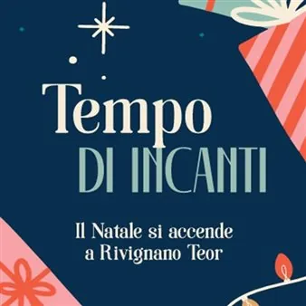

da ven 4 dic a mer 6 gen
La Magia del Natale. Tempo di Incanti
Dal 4 dicembre al 6 gennaio il Natale si riaccende a Rivignano-Teor, è ... Tempo di Incanti, la rassegna di eventi organizzata dal Comune di Rivignano Teor in collaborazione con le Associazioni locali. Un'occasione per incontrarsi e trascorrere insieme le prossime Festività…
 Indicazioni
Indicazioni
- Costi e prenotazioni
- Costo non indicato · Prenotazione non indicata
- Programma
- Programma da verificare. Apri la fonte ufficiale per orari e possibili aggiornamenti.
- In caso di maltempo
- Nessuna indicazione specifica pubblicata.
- Note
- Acquisito automaticamente dalla fonte.
L’EVENTO
Descrizione completa
Dal 4 dicembre al 6 gennaio il Natale si riaccende a Rivignano-Teor, è ... Tempo di Incanti , la rassegna di eventi organizzata dal Comune di Rivignano Teor in collaborazione con le Associazioni locali. Un'occasione per incontrarsi e trascorrere insieme le prossime Festività Natalizie.
Venerdì 4 dicembre
ore 17.30 - in piazza a Teor, accensione dell'albero di Natale - Merenda in piazza e melodie con "Le cornamuse e le zampogne natalizie" a cura dell'Amministrazione Comunale in collaborazione con la Pro Loco di Teor, la sezione AFOS di Teor e il Gruppo ANA di Rivignano Teor Dal 5 all'8 dicembre
Stelle di Natale 2026: i volontari dell'Ail- saranno presenti in piazzo a Rivignano per la raccolta fondi a favore di tutti pazienti ematologici.
Domenica 6 dicembre
alle 9.30 alle 12.30 - davanti alla Chiesa di Teor
dalle 17.00 alle 19.00 - in piazza a Rivignano
Le persone di uet StazioneRiva saranno presenti con un mercatino per esporre i loro manufatti
ore 17.00 - in piazza a Rivignano, accensione dell'Albero di Natale e benedizione del Presepe realizzato con il contributo del Gruppo di Volontariato Vincenziano. Concerto gruppo "Gospel - The New Victory Gospel Vaices" a cura dell'Amministrazione Comunale e merenda in piazza con la collaborazione del Gruppo ANA e AFDS di Rivignano
Giovedì 10 dicembre
ore 17.30 - presso la Biblioteca di Teor
"La magia del Natale" sgranati e bocche spalancate. Letture per bambini con le lettrici volontarie Elisabetta e TIZiana
Dal 10 dicembre al 10 gennaio
Presepe sul fiume: a cura della Pro Loco di Ariis
Venerdì 11 dicembre
ore 16.30 - presso la Soc. Agr. Odorico di Sivigliano "Tra le stelle di Natale" - Presentazione del libro "Lo Schiaccianoci - Corpi che ascoltano" a cura di StazioneRiva
Sabato 12 dicembre
ore 10.00 - presso il polifunzionale di Teor Assegnazione "Premio Tesi di Laurea", presentazione della tesi e premiazione
ore 21.00 - presso l'Auditorium di Rivignano Rappresentazione Teatrale "A piedi nudi nel pareo" a cura dell'associazione Melodycendo APS di Udine, dell'Amministrazione Comunale e del Gruppo Ricreativo Drin e Delaide
Domenica 13 dicembre
dalle ore 10.00 alle 18.00 - davanti al polifunzionale di Teor Accendiamo il Natale 2026 a cura della Pro Loco Teor - Mercatini e banchetti natalizi con la collaborazione delle scuole del Comune di Rivignano Teor ore 17.00 - arrivo di Santa Lucia
ore 17.30 - presso l'Auditorium di Rivignano Concerto di Natale della Banda Musicale dello Stella di Rivignano
Lunedì 14 dicembre
ore 17.30 - presso la Biblioteca di Rivignano Intrecci di fili - corso di uncinetto con Elena
ore 20.30 - presso il polifunzionale di Teor Cerimonia di consegna delle Civiche Benemerenze e conferenza di fine anno a cura dell'Amministrazione Comunale
Mercoledì 16 dicembre
ore 16.30 - presso la Biblioteca di Rivignano BiblioLab "Oggi è - Crea il tua calendario per l'anno nuovo" - laboratorio creativo a partire dai 3 anni (su prenotazione 0432/775778 int. 8/9)
Giovedì 17 dicembre
ore 17.00 - presso le scuole medie di Rivignano Tradizionale brindisi natalizio per scambi di auguri. Aperto a tutti gli iscritti dell'UTE di Rivignano
Venerdì 18 dicembre
Un giorno nella magia del Natale ad Aquileia con la Cattedrale, la "Domus di Tito Macro" e i presepi di Crodo a cura dell'UTE di Rivignano Teor e Varmo
ore 14.30 - presso lo spazio delle panchine colorate a Teor i bambini della Scuola primaria di Teor saranno lieti di augurare un Sereno Natale a tutta la comunità
ore 16.30 - presso la Biblioteca di Rivignano "Chiacchiere tra le pagine dei libri" gruppo di lettura aperto a tutti
ore 16.30 - presso la Biblioteca di Rivignano "Cioccolata calda.„con panna" - Letture, narrazioni e un laboratorio al profumo di cacao insieme a Sara Beinat e Federica Pagnacco (è richiesta la prenotazione 0432/775778 int. 8/9)
Sabato 19 dicembre
ore 20.30 - presso la chiesa Parrocchiale di Flambruzzo "Aspettando il Natale" - tradizionale concerto di Natale del "Coro Pueri et Ouvenes Cantores Santa Maria del Rosario" di Flambruzzo. Coro "Pueri Cantores del Duomo di Udine", diretto da Annamaria Dell'Oste, Violino Margherita Perin
ore 21.30 - presso piazza Nuova Agorà del Friuli Dusty Bottoms "Concerto in ricordo di un amico"
Domenica 20 dicembre
ore 10.30 - presso la residenza Zaffiro di Rivignano, auguri di Natale degli Amministratori comunali e del Gruppo ANA di Rivignano Teor accompagnati dalla Banda Musicale dello Stella
ore 17.00 - presso la chiesa parrocchiale di Flambruzzo Concerto Gruppo Ottoni della Bassa Friulana diretto da Francesco Fosso e pianoforte Angela Macor a cura del Coro Pueri et Ouvenes Cantores Santa Maria del Rosario
Martedì 22 dicembre
ore 10.30 - presso Piazza Tarabane a Rivignano Canti e Auguri di Natale a cura dei bambini e degli insegnanti della Scuola Primaria di Rivignano
ore 17.30 presso il Polifunzionale di Teor, spettacolo di Natale per bambini "Moffola e Ciaspola„. due renne pigrone" - Narrazione, musica dal vivo, pupazzi e ombre con Noemi Bassani e Stefano Tosi (Ortoteatro) a cura dell'Amministrazione Comunale
Giovedì 24 dicembre
ore 10.00 - parco Divisione Julia a Rivignano "Ruote senza barriere - Aspettando Babbo Natale" - Rally Therapy inclusione sui mezzi da gara e nel pomeriggio percorso aperto a tutti a cura dei Motori dello Stella, Manocchi Off Road e Protezione Civile di Rivignano Teor e Calcio inclusivo con l'associazione Tagliamento Thunders di Varmo
ore 16.00 - in piazza Tarabane a Rivignano "Aspettando Babbo Natale" cioccolata calda, vin brulè e panettone per tutti con la collaborazione delle associazioni locali
ore 23.00 - dopo la S. Messa a Rivignano, scambio degli Auguri con panettone e brulè a cura della Pro Loco di Rivignano con l'accompagnamento musicale dell'Associazione Musicale e Culturale primavera di Rivignano
Sabato 26 Dicembre
ore 20.45 - presso il Ricreatorio Parrocchiale di Rivignano Concerto di Natale a cura Associazione Musicale e Culturale Primavera di Rivignano - Direttore: Simone Comisso
Sabato 2 gennaio
ore 20.30 - presso IAuditorium di Rivignano Concerto di inizio anno del Quartetto di Sassofoni Accademia a cura dell'Amministrazione Comunale
Martedì 5 Gennaio
ore 19.00 - area festeggiamenti di Campomolle Pignarûl a cura de La Cumitive di Cjamuel
ore 19.30 — ad Ariis Incendio sul fiume a cura della pro Loco di Ariis
ore 20.30 - ex asilo di Flambruzzo, Pignarul arriva la Befana con calzette per tutti i bambini e per i grandi vin brulè, pinza. A cura della parrocchia di Flambruzzo
Mercoledi 6 gennaio
ore 17.00 - presso la Chiesetta del Falt, falò dell'epifania a Cura del gruppo ANA di Rivignano Teor con accompagnamento della Banda Musicale dello Stella.
Scarica il programma completo
IL PROGRAMMA
Programma e orari
Appuntamenti raccolti dalle fonti elencate. Dove manca un orario, non è ancora disponibile in questa scheda.
Programma pubblicato
- ore 17.00
- ore 17.30
- ore 16.30
- ore 10.00
- ore 21.00
- ore 17.30 - presso la Biblioteca di Rivignano Intrecci di fili - corso di uncinetto con Elena
- ore 20.30 - presso il polifunzionale di Teor Cerimonia di consegna delle Civiche Benemerenze e conferenza di fine anno a cura dell'Amministrazione Comunale
- ore 16.30 - presso la Biblioteca di Rivignano BiblioLab "Oggi è - Crea il tua calendario per l'anno nuovo" - laboratorio creativo a partire dai 3 anni (su prenotazione 0432/775778 int. 8/9)
- ore 14.30
- ore 20.30
- ore 21.30
- ore 10.30
- ore 16.00
- ore 23.00
- ore 20.45
- ore 19.00
- ore 19.30
INFORMAZIONI UTILI
Prima di partire
- Controllare la fonte prima di partire.
ORGANIZZAZIONE